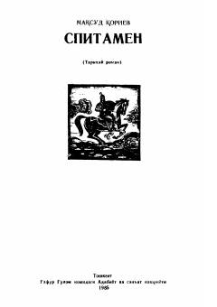

SIskandar Zulqarnayn bosqiniga qarshi Spitamen boshchiligidagi xalq kurashi haqida tarixiy roman.
Ushbu tarixiy roman makedoniyalik Aleksandrning (Iskandar) O'rta Osiyoga, xususan Sug'diyona hududiga qilgan bosqini va unga qarshi Spitamen boshchiligidagi xalq ozodlik kurashi haqida hikoya qiladi. Asarda qadimgi Maroqand shahri hayoti va bosqinchilarga qarshi mardona kurashgan ajdodlarimiz jasorati tasvirlangan.